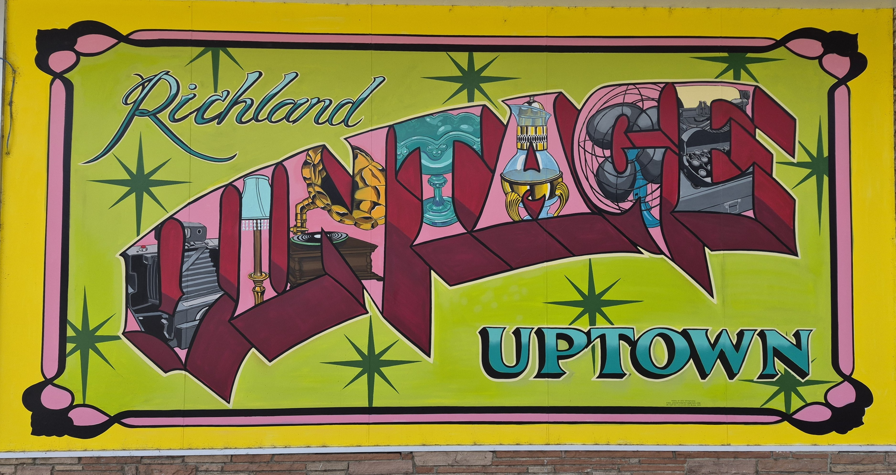
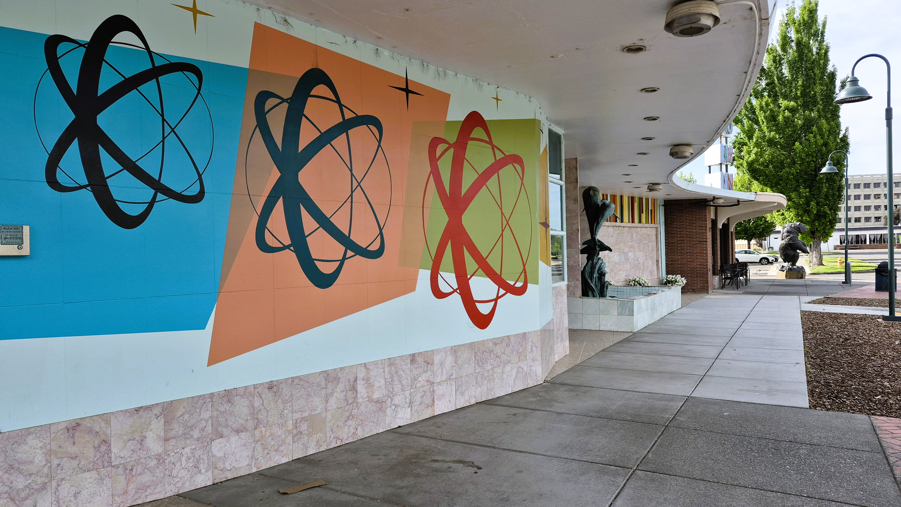
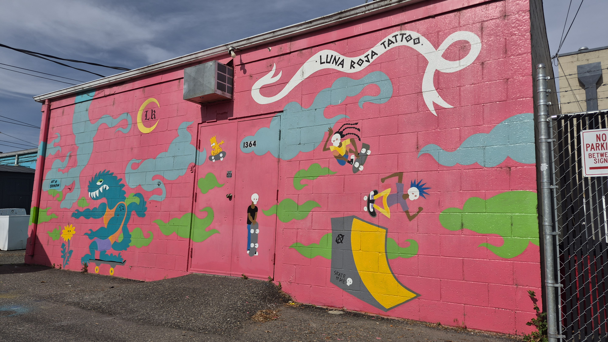
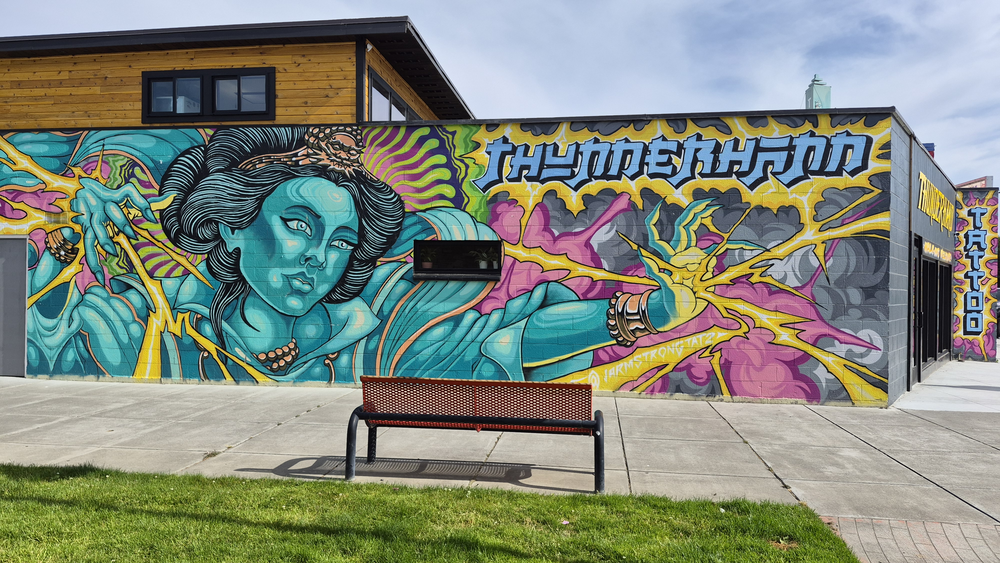
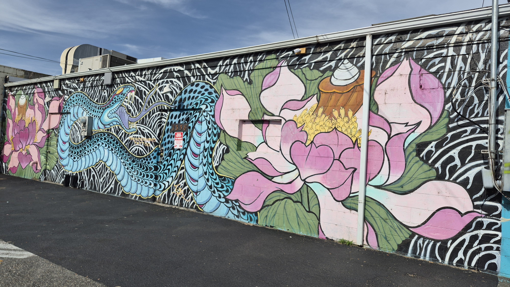
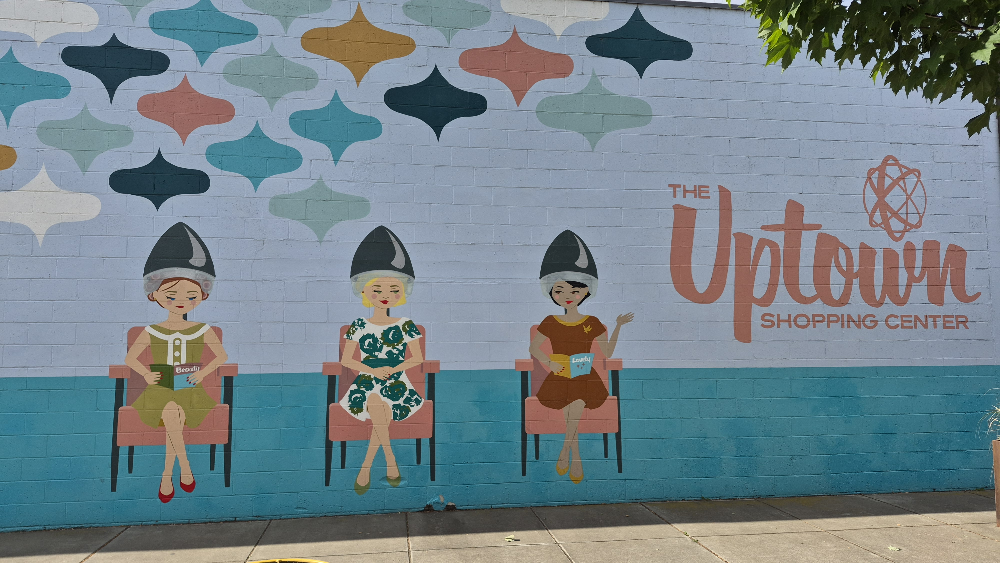
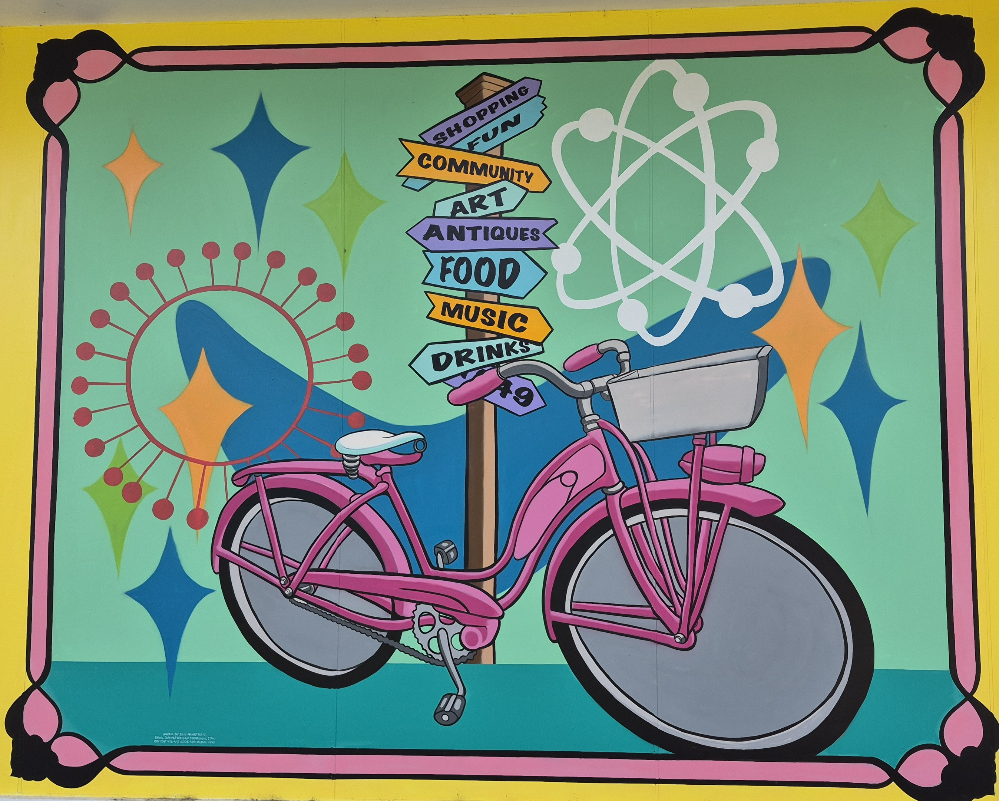

Arts + Culture
Tri-Cities Murals
A visual field guide to painted walls, public art, color, and street-level creativity around the region.







Arts + Culture
A visual field guide to painted walls, public art, color, and street-level creativity around the region.






